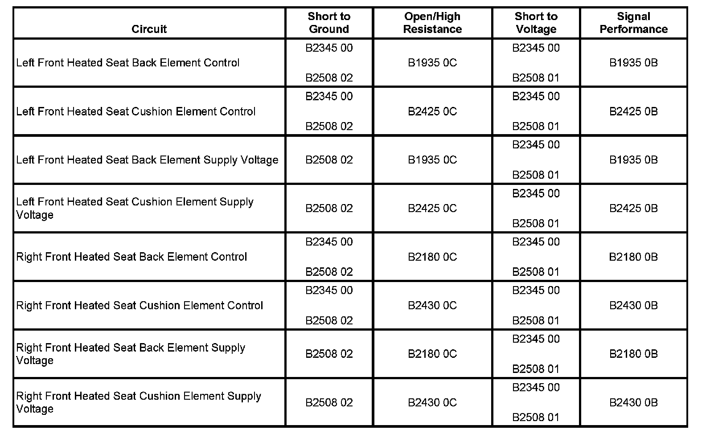

B2508 (Front Seat)
DTC B2508 OR B2509(FRONT SEAT)
DTC DESCRIPTOR
DTC B2508 01
Seat Heater Relay Circuit Shorted to Ground
DTC B2508 02
Seat Heater Relay Circuit Shorted to Battery or Open
DIAGNOSTIC FAULT INFORMATION

Perform the Diagnostic System Check - Vehicle prior to using this diagnostic procedure. Initial Inspection and Diagnostic Overview
CIRCUIT/SYSTEM DESCRIPTION
The front seat heating elements are controlled by a common high current relay internal to the Memory Seat Module (MSM) and on the low side by individual element control circuits. Before the MSM will allow heated seat operation, it checks to see if the heating element supply voltage circuits and control circuits are shorted to ground or battery voltage. Once the module verifies that it is not closing into a shorted heating element, it allows heated seat operation. After which it continues to monitor for a shorted circuit.
CONDITIONS FOR RUNNING THE DTC
The memory seat module must be powered.
CONDITIONS FOR SETTING THE DTC
B2508 02
Before the heated seats are activated, the MSM detects a short to ground on the seat heating element supply voltage circuit or control circuit.
B2508 01
Before the heated seats are activated, the MSM detects a short to battery voltage on the seat heating element supply voltage circuit or control circuit.
ACTION TAKEN WHEN THE DTC SETS
The heated seat function for both the driver and passenger seats will be disabled.
CONDITIONS FOR CLEARING THE DTC
- The current DTC clears when the malfunction is no longer present and the power mode changes to OFF then back to ACC or RUN.
- The history DTC will clear after 50 consecutive fault-free ignition cycles have occurred.
CIRCUIT/SYSTEM TESTING
1. Ignition OFF, disconnect the MSM connectors C1 and C4.
2. Test for infinite resistance between the left seat heating element supply voltage circuit terminal 14 and ground.
- If less than infinite, test the supply voltage circuit and the seat cushion and seat back heating element control circuits for a short to ground.
3. Ignition ON, verify that a test lamp does not illuminate between the supply voltage circuit terminal 14 and ground.
- If the test lamp illuminates, test the supply voltage circuit and the seat cushion and seat back heating element control circuits for a short to voltage.
4. Test for infinite resistance between the right seat heating element supply voltage circuit terminal 6 and ground.
- If less than infinite, test the supply voltage circuit and the seat cushion and seat back heating element control circuits for a short to ground.
5. Ignition ON, verify that a test lamp does not illuminate between the supply voltage circuit terminal 6 and ground.
- If the test lamp illuminates, test the supply voltage circuit and the seat cushion and seat back heating element control circuits for a short to voltage.
6. If all circuits test normal, replace the MSM.
REPAIR INSTRUCTIONS
Perform the Diagnostic Repair Verification after completing the diagnostic procedure.
- Front Seat Back Heater Element Replacement
- Front Seat Cushion Heater Element Replacement
- Control Module References for the MSM replacement, setup, and programming Verification Tests Programming and Relearning